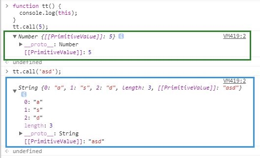
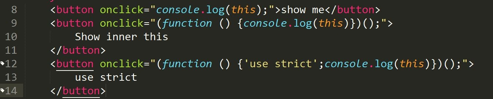
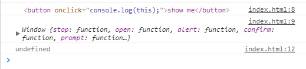
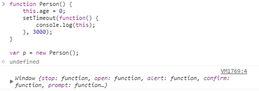
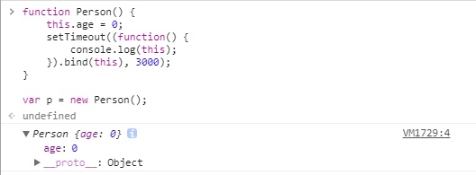

从基本概念入手，深入this指向问题。
导航
一、一些概念
二、函数
三、细说this在各场景中的指向
补充：apply() & call()
一、一些概念
1.1执行环境
执行环境（execution context）是JavaScript中最为重要的一个概念。执行环境 定义了 变量 或 函数 有权访问的其他数据，决定了它们各自的目的。
某个执行环境中的所有代码执行完毕后，该环境被销毁，保存在其中的所有变量和函数定义也随之销毁。
ES6中新增块级作用域，即花括号封闭的代码块也有自己的执行环境。
1.2全局执行环境
全局执行环境 是最外围的一个执行环境。根据ECMAScript实现所在的宿主环境不同，表示执行环境的对象也不一样。在web浏览器中，全局执行环境就是window对象，因此所有全局变量和函数都是作为window对象的属性和方法创建的。
全局执行环境直到应用程序退出（如关闭浏览器）时才会被销毁。
1.3环境栈
每个函数都有自己的执行环境。当执行流进入一个函数时，函数的执行环境 就会被推入一个 环境栈 中。而在函数执行之后，栈将其环境弹出，把控制权返回给之前的执行环境。
ECMAScript程序中的执行流正是由这个方便的机制控制着。
1.4变量对象
每个执行环境中都有一个与之相关的变量对象，环境中定义的所有变量和函数都保存在这个变量对象中。编程者编程时无法访问这个对象，但解析器在处理数据时会在后台使用它。
1.5作用域链
作用域链本质上是一个指向变量对象的指针列表，它只引用但不实际包含变量对象。
当代码在一个环境中执行时，会创建 变量对象 的一个 作用域链（scope chain）。作用域链是为了保证对执行环境有权访问的所有变量和函数的有序访问。
作用域链的前端始终是当前执行的代码所在环境的变量对象。如果这个执行环境是函数，则将其活动对象（activation object）作为变量对象。
活动对象在最开始时只包含一个变量，即arguments对象（这个对象在全局执行环境中是不存在的）。作用域链中的下一个变量对象来自包含（外部）执行环境，再下一个变量对象则来自下一个包含环境。这样，一直延续到全局执行环境；全局执行环境的变量对象始终都是作用域链中的最后一个对象。
1.6标识符解析
标识符解析 是沿着作用域链一级一级地搜索标识符的过程。搜索过程始终从作用域链的最前端开始，然后逐级地向后回溯，直至找到标识符为止（如果找不到标识符，通常会导致错误发生）
二、函数
2.1 定义
可以封装任意多条语句，而且可以在任何时候调用执行。
2.2 函数内部属性
在函数内部，有两个特殊的对象：arguments和this。其中，arguments 是一个类数组对象，包含着传入函数中的所有参数。
对arguments调用数组方法时(如sort())，要先转化为数组对象再调用方法。
Array.prototype.slice.call(arguments).sort();
this引用的是函数执行的环境对象，或者也可以说是this值（当在网页的全局作用域中调用函数时，this对象引用的就是window对象）。在调用普通函数（匿名函数情况特殊，见2.3小节）之前，this的值并不是确定的，因此this可能会在代码执行过程中引用不同的对象，即：this对象是在运行时基于函数的执行环境绑定的，在全局函数中，this等于window，而当函数被作为某个对象的方法调用时，this等于那个对象。
1 |
|
上面这个函数sayColor是在全局作用域下定义的，它引用了this对象。
当在全局作用域中调用sayColor()时，this引用的是全局对象window；换句话说，对this.color求值会转换成对window.color求值，于是结果返回了“red”。
而当把这个函数赋给对象obj并调用obj.sayColor时，this引用的是对象obj，因此对this.color求值会转换成对obj.color求值，结果就返回了“blue”。
虽然
sayColor函数中还定义了一个color变量，但是因为this所指向是调用该函数的对象，即其执行时的执行环境，所以this.color始终不会等于“green”。
函数的名字仅仅是一个包含指针的变量而已。因此，即使是在不同的环境中执行，全局的
sayColor()函数和obj.sayColor指向的仍然是同一个函数。
2.3 匿名函数中的this
匿名函数的执行环境具有全局性（不管所处在什么位置），因此其this对象通常指向window（但在通过call()或apply()改变函数执行环境的情况下，this就会指向其他对象。）
三、细说this在各场景中的指向
在非箭头函数下，this指向调用其所在函数的对象，而且是离谁近就是指向谁（此对于常规对象，原型链， getter & setter等都适用）；构造函数下，this与被创建的新对象绑定；DOM事件，this指向触发事件的元素；内联事件分两种情况，bind绑定， call & apply 方法等， 容以下一步一步讨论。箭头函数也会穿插其中进行讨论。
3.1 全局环境下
在全局环境下，this 始终指向全局对象（window）, 无论是否严格模式；
1 | var a = 1; |
3.2 函数上下文调用
3.2.1 普通函数调用this
上文提到过，this对象是在运行时基于函数的执行环境绑定的，在全局函数中，this等于window，而当函数被作为某个对象的方法调用时，this等于那个对象。
在全局执行环境下调用函数，分为两种情况：严格模式和非严格模式。
非严格模式下，this 默认指向全局对象window。
2
3
4
5
6
console.log(this);
}
foo(); //window
严格模式下，this等于undefined。
2
3
4
5
6
7
"use strict"; //严格模式
console.log(this);
}
foo(); //undefined
3.2.2 匿名函数中的this
匿名函数的执行环境具有全局性，因此其this对象通常指向window。
（但在通过call()或apply()改变函数执行环境的情况下，this就会指向其他对象。）
3.3 原型链中的this
原型链中的方法的this仍然指向调用它的对象，与普通讨论一致。
3.4 构造函数中的this
构造函数中的this与被创建的新对象绑定。
当构造器返回的默认值是一个this引用的对象时，可以手动设置返回其他的对象，如果返回值不是一个对象，返回this。
2
3
4
5
6
7
> this.a = 1;
>}
>
>var c = new C();
>console.log(c.a); //1
>
2
3
4
5
6
7
8
> this.a = 2;
> return {a: 3}; //手动设置返回其他对象，这时第二行的this.a没有也行
>}
>
>var c2 = new C2();
>console.log(c2.a); //3
>
3.5 call & apply
当函数通过Function对象的原型中继承的方法 call() 和 apply() 方法调用时， 其函数内部的this值可绑定到 call() & apply() 方法指定的第一个对象上，如果第一个参数不是对象，JavaScript内部会尝试将其转换成对象然后指向它。
1 | function add(c, d){ |

3.6 bind 方法
bind方法在ES5引入，在Function的原型链上，Function.prototype.bind。bind方法会创建一个新方法，通过bind方法绑定后，函数将被永远绑定在其第一个参数对象上，而无论其在什么情况下被调用。
1 | function f(){ |
3.7 DOM 事件处理函数中的 this
当函数被当做监听事件处理函数时，其this指向触发该事件的元素（针对于addEventListener事件）
1 | // 被调用时，将关联的元素变成蓝色 |
3.8 内联事件中的 this
内联事件中的this指向分两种情况：
- 当代码被内联处理函数调用时，它的this指向监听器所在的DOM元素。
- 当代码被包括在函数内部执行时，其this指向等同于 函数直接调用 的情况，即在非严格模式指向全局对象window， 在严格模式指向undefined。


3.9 setTimeout & setInterval
对于延时函数内部的回调函数的this指向全局对象window（当然我们可以通过bind方法改变其内部函数的this指向）
1 | //默认情况下代码 |


3.10 箭头函数中的 this
箭头函数是没有this对象的，它内部使用的this是由定义它的宿主对象决定的。
1 | var message = "Hello!"; |
这是一个Vue实例。
this4中的this.message等于Vue实例的message“你好”，因为匿名函数是没有this的，而定义它的宿主环境是Vue（注意不是methods对象，在Vue创建实例时创建方法实际上创建Vue实例的属性。）
3.11 Vue中的this
Vue的生命周期钩子函数内的this即指向Vue实例。
Vue methods内的各种普通函数中的this指向window对象。（所以为了维持this会var that = this，that指向Vue实例。）
箭头函数指向Vue实例。
延迟函数指向window。
补充：apply() & call()
4.1 apply()
apply定义：调用一个对象的一个方法，用另一个对象替换当前对象。
例如：b.apply(a, arguments); 对象a应用对象b的方法。
4.2 call()
call：调用一个对象的一个方法，用另一个对象替换当前对象。例如：B.call(A, args1,args2);即A对象调用B对象的方法。
4.3 二者比较
4.3.1 不同
apply：最多只能有两个参数——新this对象和一个数组argArray。如果给该方法传递多个参数，则把参数都写进这个数组里面，当然，即使只有一个参数，也要写进数组里。如果argArray不是一个有效的数组或arguments对象，那么将导致一个TypeError。如果没有提供argArray和thisObj任何一个参数，那么Global对象将被用作thisObj，并且无法被传递任何参数。
call：它可以接受多个参数，第一个参数与apply一样，后面则是一串参数列表。这个方法主要用在js对象各方法相互调用的时候，使当前this实例指针保持一致，或者在特殊情况下需要改变this指针。如果没有提供thisObj参数，那么 Global 对象被用作thisObj。
4.3.2 相同
都“可以用来代替另一个对象调用一个方法，将一个函数的对象上下文从初始的上下文改变为由thisObj指定的新对象”。
4.3.3 总结
apply和call的功能是一样的，只是传入的参数列表形式不同。